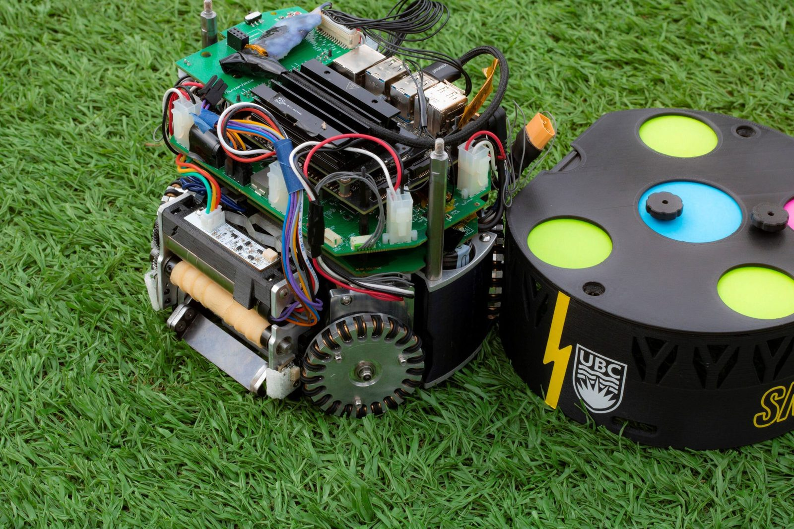

Robot Localizer Redesign
Replacing our robots' Kalman filter localizer with an EKF in the robot frame, so that frame conversions happen inside the filter where correction can reach them.

A filter can't fix a mistake you made before you handed it the data.
This is what I'm on right now at Thunderbots. Started as an IMU calibration ticket, turned into a full redesign.
Context I was fixing IMU calibration and kept noticing the IMU was breaking stuff way beyond calibration. We weren't fusing IMU omega and vision properly and it was wrecking our position prediction.
One of the members on the team measured the localizer last sprint and got about 1-2cm off at low speed, 2-3cm at medium. That's the part that made me feel like smth wrong is going on because it scales with speed.
Our prediction step has delta T hardcoded to 0.015s. So at 1 m/s the filter predicts you moved 1.5cm. At 2 m/s, 3cm. Those are basically exactly the numbers he measured.
This shows that our robot localizer is just predicting. The measurements we got from wheel encoders and IMUs are not integrated well enough. More testing will be done to show this.
Problem
Right now it's a Linear Kalman Filter in the global frame, fusing delayed vision, IMU and wheel odometry. I found six structural issues and most of them come back to one thing.
We rotate wheel velocities into the global frame before they ever reach the filter. We do it using the current heading estimate, which might be stale and hasn't been corrected yet. And because that rotation happens outside the filter, whatever error is in that heading gets baked into the velocity permanently. The correction step has no way to touch it.
The rest of the list:
- Rewind duration is hardcoded. Vision comes in late so we rewind, apply the measurement back at that point in time, then replay forward. But packet latency varies, and honestly the constant we picked isn't even the right constant.
- No real control input. The filter can't predict where the robot is being told to go. We're using acceleration as a stand-in and it's noisy and it's not what we want to model anyway.
- History grows forever during a vision blackout. No packets means nothing trims the buffer, so it just runs off.
- Filter is untuned. Covariances aren't from the actual robot model or from real measurement noise, and the process model isn't using the correct relative-motion formula.
- Matrix formatting doesn't match the rest of the codebase. Annoying to read next to the ball filter.
Plan
Two changes, and they only work together. LKF to EKF, and global frame to local (robot) frame.
We have to convert frames either way. It's only a question of where you do it.
Putting the state in the robot frame fixes the root cause, because wheel velocities are already local. Nothing needs converting on the wheel path at all. It flips the problem around: now it's vision, which is global, that has to come into the local frame to be used as a measurement.
That conversion is a rotation by heading, and now it happens inside the filter. Which is why an LKF stops working. The observation model goes nonlinear once heading is multiplying your position and velocity terms, and a Kalman filter assumes linear models. So you need the EKF and its Jacobians.
The other thing we get is uncertainty done properly. With the EKF, heading uncertainty sits in the state covariance and propagates into positional uncertainty during correction. With the LKF that never happened, since the rotation just used a point estimate of heading and ignored its error entirely.
| Fix | Resolves |
|---|---|
| Measure rewind time instead of hardcoding it | Hardcoded rewind |
| Convert vision into local frame, inside the filter | Conversion order |
| Add a real control input | Missing control |
| Circular buffer for the history | Unbounded growth |
| Unfreeze velocity during the update step | Knock-on of conversion order |
| Tune with the correct car model and real measurement noise | Untuned filter |
| Match covariance formatting to the ball filter | Consistency |
Velocity is frozen during updates right now because updates were messing up the velocity estimate. I'd argue that's just issue 2 showing up somewhere else, not something we should be working around. Building it will tell me if I'm right.
Current State
I'm confirming where the control input should come from before I start implementing. The best team in the world, TigersMannheim runs an EKF with a slightly different structure to incorperate IMU and wheel data. I think it will be really cool to incorperate smth new, the rewind KF, to see if it can work well. Credits to our old Software Lead Andrew for the rewind idea!